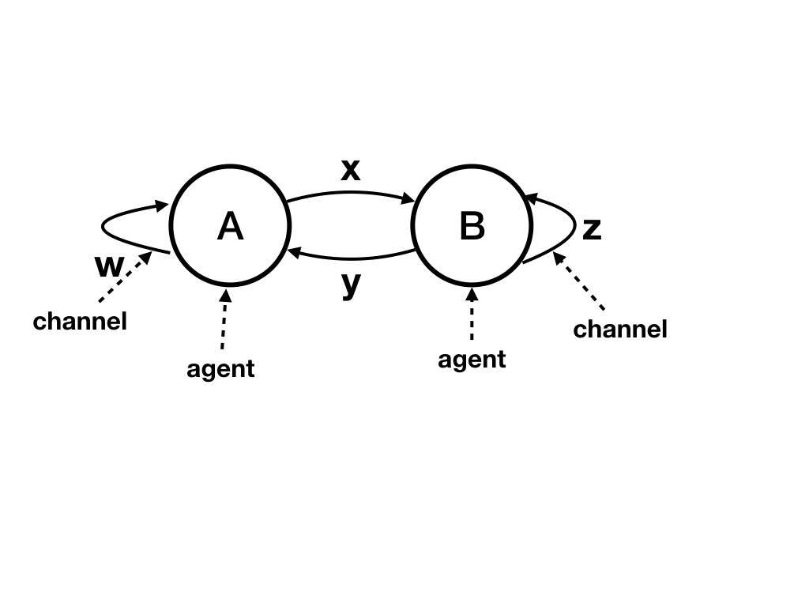

We use the following heuristic for solving many
problems: Design algorithms assuming that local clocks are perfectly
synchronized, and then
determine whether the same algorithms can be used with
unsynchronized clocks.
Logical clocks are local clocks that can be used in many algorithms
as they though the clocks are synchronized even though they
are not.
If every agent had a perfect clock, then a global state of the system
could be obtained easily. Each agent records its state at a
specified time \(T\), and each agent records the state of an
incoming channel as the sequence of messages sent before or at \(T\) and
received after \(T\).
Local clocks are not perfect; they drift
apart from each other. Later we will describe algorithms that reduce
drift among local clocks. The algorithms do not, however, guarantee
that local clocks are perfectly synchronized.
A logical clock algorithm is one in which each agent assigns a
number \(t(e)\), called
a timestamp, to each event \(e\) in its trajectory.
The timestamp of an event is
called the logical time at the event.
The logical time of an event can be used as though it is the real
time for some problems.
Logical clocks don't change the underlying computation. For example,
we can add logical clocks to an algorithm that manages how files are
shared in a distributed system. The algorithm for file-sharing
remains unchanged when we superpose logical clocks on top of the
algorithm. We can, however, use logical clocks for monitoring the
underlying computation. For instance, logical clocks can be used to
determine if the file-sharing algorithm is deadlocked.
Specification of Logical Clocks
The specification of the algorithm is as follows.
For all
\(t\), let past(t) be the set of events with timestamps of \(t\) or
less, and let future(t) be the set of events with timestamps
greater than \(t\).
For all \(t\), the cut \([past(t), future(t)]\)
must be a consistent cut.
An equivalent definition is that if an event \(e\) depends on an
event \(e'\) in the trajectory (i.e., there is a path from \(e'\) to
\(e\)) then \(t(e) > t(e')\).
Examples of Consistent Cut based on
Timestamps
The figure below illustrates a consistent cut obtained from timestamps.
It shows a set of timestamps in a timeline diagram with
agents \(A, B, D\), and with one channel from each agent to every
other agent. Timestamps are shown as integers inside the circles
representing events. Initial events have timestamps of 0.
The first event on agent \(A\) after the initial event is an internal
event. Its timestamp can be any value greater than 0; the diagram
shows a timestamp of 1. In this event, agent \(A\) sends a message to
agent \(B\); the message is also given the same timestamp as the
event, i.e. a timestamp of 1.
The first event on agent \(D\), after the initial event, occurs when
\(D\) receives a message. This message has timestamp 1. The timestamp
for this event must be greater than 1 and greater than 0 (the
preceding event on the agent). In the diagram the timestamp is set to
2. Note that any value greater than 1 would be correct.

Fig. 1: Consistent Cut based on Timestamps
The diagram shows a cut [past(2), future(2)]. Because all
edges are directed from lower- to higher-numbered timestamps, there is
no edge from future(2) to past(2). And so the cut is
consistent.
Logical times satisfy the specification if and only
if:
Logical times satisfy the specification if and only
if:
For all edges \((e, e')\) in the timeline diagram:
\(t(e') > t(e)\).
Algorithm
An algorithm for assigning timestamps follows directly from the above
observation.
Timestamps of messages:
Every message is assigned a timestamp by the sender of the message.
An agent assigns a timestamp of
\(t(e)\) or greater to each message that it sends in event \(e\).
The timestamp of an initial event is arbitrary.
For any event \(e'\) on an agent, let \(e\) be the event
that immediately precedes \(e\) on that agent.
For an internal event \(e'\) (i.e. an event in which no message is
received), set \(t(e')\) to any value greater than \(t(e)\).
For an event \(e'\) in which message with timestamp \(T\) is
received, set \(t(e')\) to any value greater than
\(\textrm{max}(t(e), T)\).
Using Logical Clocks to Determine Global
Snapshots
The state of an agent at a consistent cut is its state after past
events and before future events. Likewise,
the state of a channel is the sequence of messages sent in the past
and received in the future. So, the global snapshot corresponding to
any timestamp \(T\) can
be obtained in the following way:
Each agent records its local state after an event with timestamp at most
\(T\) and before an event with timestamp greater than \(T\).
An agent starts recording the state of each of its incoming channels
when the agent records its own state. An agent stops the recording
the state of an incoming channel when the agent receives a message
on the channel where either:
the message has timestamp equal to \(T\), in which case this message
is included in the recorded state of the channel, or
the message has timestamp greater than \(T\), in which case this message
is not included in the recorded state of the channel.
From the algorithm, it follows that an agent records the state of an
incoming channel as the sequence of messages sent in past events and
received in future events. This is the state of the channel at the
consistent cut specified by \(T\).
Example of a Global Snapshot using Timestamps
The figure shows the global snapshot in which past events are
those with snapshots at most 2. Agent \(A\) records its local state as
its state after its event with timestamp 1 and before its event with
timestamp 3. Agent \(B\) records its local state as its state after
its event with timestamp 2 and before its event with timestamp 4.
Agent \(B\) records its local state as is its state after its event
with timestamp 2 and before its event with timestamp 3. The points in
the timeline at which the agents start recording their states are the
points at which the cut (the purple line) crosses the agent timelines.
Agent \(A\) starts recording the state of its incoming channel from
\(B\) when \(A\) records its own local state. \(A\) stops recording
the state of this channel when it receives a message on the channel
with timestamp equal to 2, and this message is included in the state
of the channel. So, the state of this channel is recorded by agent
\(A\) as the single message with timestamp 2. In the diagram this is
the message that crosses the cut.
Vector Clocks
The logical clock algorithm ensures that if there is a path from an
event \(e\) to an event \(e'\) in the timeline diagram then \(t(e') >
t(e)\); however, the converse isn't necessarily true.
The vector clock algorithm assigns a timestamp to each event where the
timestamp is a vector with an element for each agent in the
system.
The vector clock
algorithm ensures that \(t(e') > t(e)\) if and only if there is
a path from \(e\) to \(e'\).
Let there be \(N\) agents in the system indexed \(0 \leq j <
N\). Let \(I_{j}\) be unit vector in direction \(j\), i.e. \(I_{j}\)
is a vector of
zeroes except that \(I_{j}[j] = 1\). A timestamp for an event \(e'\)
on agent \(j\) is computed in the following way. Initial timestamps
are zero vectors.
For an internal event: \(t(e') = t(e) + I_{j}\)
For an event in which a message with timestamp \(T\) is received:
\(t(e') = max(t(e), t(M)) + I_{j}\)
Example of Vector Clocks
Fig. 2: Example of Vector Clocks
The figure shows both scalar and vector timestamps. Scalar
timestamps are shown inside the circles representing events while
vector timestamps are shown just outside the circles.
For example, there is a path from the event with timestamp \([1, 0,
1]\) to the event with timestamp \([2, 0, 1]\) whereas there is no
path between events with timestamps \([2, 0, 1]\) and \([1, 1, 2]\).
Proof of Correctness of Vector Clocks
We will prove that for all events \(e, e'\) if \(t'(e) \leq t(e)\)
then there is a path from \(e'\) to
\(e\). (If \(t'(e) = t(e)\) then \(e' = e\) and there is a
zero-length path from \(e\) to itself.)
The proof is based on the following observations that are easily
proved.
For all events \(e\) and all agents \(j\): There exists a path to
\(e\) from the \(i\)-th event on agent \(j\) for all \(i \leq
t(e)_{j}\).
If \(e\) is at agent \(j\) then \(e\) is the
\(t(e)_{j}\)-th event on agent \(j\).
From observation 2, \(e'\) is the \(t(e')_{j}\)-th on an agent \(j\).
From observation 1, there is a path to \(e\) from the \(i\)-th event on
agent \(j\) for \(i \leq t(e)_{j}\).
So, there is a path from \(e'\) to \(e\) because \(t(e')_{j} \leq t(e)_{j}\).
Example of Proof Steps
As an example of observation 1, consider the 5-th event in figure 2; this event has
timestamp \([3, 1, 1]\).
There are paths to this event from the zeroth, first, second, and third
events on agent 0, and from the zero-th and first events on agent
\(1\), and from the zero-th and first
events on agent \(2\).
As an example of observation 2, the event with timestamp \([1, 1, 2]\)
is the second event on agent \(2\).
K. Mani Chandy,
Emeritus Simon Ramo Professor,
California Institute of Technology